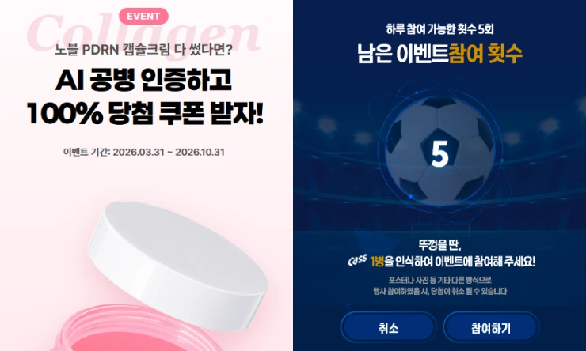
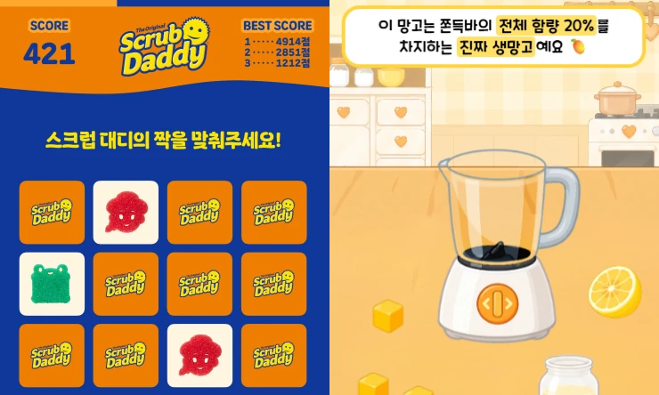
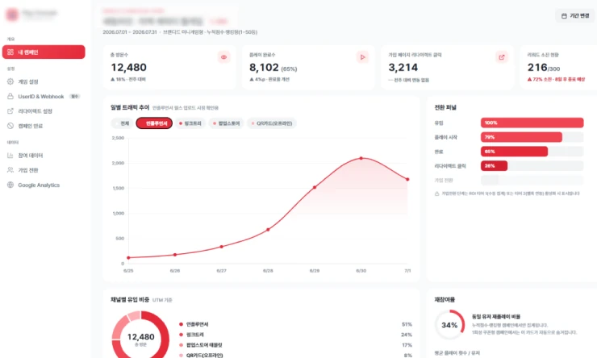

01 CATCH
참여형 이벤트 설계

지나가는 사람을 참여자로 바꿉니다. 앱 설치도 회원가입도 없이, QR 한 번으로 시작되는 웹 이벤트를 설계합니다.
스튜디오 하입은 브랜드 캠페인을 위한 웹게임과 현장형 콘텐츠를 만듭니다.
기획부터 참여 데이터 정리까지 한 팀이 맡습니다.
Core Service
참여를 만들고, 브랜드를 각인시키고, 성과를 증명합니다.
01 CATCH

지나가는 사람을 참여자로 바꿉니다. 앱 설치도 회원가입도 없이, QR 한 번으로 시작되는 웹 이벤트를 설계합니다.
02 KEEP

브랜드 메시지를 게임 규칙과 화면에 맞게 풀어냅니다. 체류시간과 브랜드 각인을 함께 고려합니다.
03 TRACK

참여한 방문객을 데이터로 잇습니다. 캠페인이 매출과 리텐션으로 이어졌는지 숫자로 확인하고, 데이터는 브랜드 자산으로 남깁니다.
가이드
인지형, 판매형, 데이터 확보형에 따라 KPI가 완전히 달라집니다. 방문자 수 하나로 전부를 평가하려는 것이 가장 흔한 실패입니다.
READ →사례집
국내외 타사 캠페인 9건과 자사 프로젝트 1건을 공개 수치와 출처로 정리했습니다. 각 지표가 움직인 배경과 적용 조건을 살펴봅니다.
READ →용어사전
체류시간, ROAS, 어트리뷰션부터 퍼스트파티 데이터, DSP, SSP까지. 마케팅, 퍼포먼스, 애드테크 필수 용어를 6그룹으로 정의했습니다.
READ →서비스
브랜드 메시지를 게임 규칙 안에 심어 만드는 짧은 인터랙티브 게임입니다. 로고를 노출하는 대신 플레이 방식으로 브랜드를 전달합니다.
이벤트 게임은 1~2주, 커스텀 브랜드 미니게임은 3~5주, AI/AR을 결합한 콘텐츠는 4~6주 정도를 기준으로 안내드립니다. 정확한 일정은 요구사항 확인 후 확정됩니다.
아니요. QR 한 번으로 진입하는 웹 기반 콘텐츠로 설계합니다. 앱 설치는 참여 장벽이 되므로 기본값에 넣지 않습니다.
네. 오프라인 부스 없이 온라인 캠페인 단독으로도 진행합니다.
데이터
참여 시점에 방문객 ID를 발급하고, 기존 회원 시스템이 있다면 그 ID와 매칭합니다. 이후 서버 간 통신(S2S) 방식으로 구매, 재방문 등의 이벤트를 같은 ID에 이어 붙여 추적합니다. 브라우저 쿠키에 의존하지 않기 때문에 오프라인 환경에서도 동작합니다.
참여 로그, 체류시간, 완주 여부, 유입 경로(QR 위치, 채널), 신규/기존 회원 여부, 이후 전환, 재방문 데이터를 수집합니다. 수집 범위는 캠페인 목적과 동의 범위에 맞춰 조정합니다.
수집된 데이터는 브랜드에 귀속됩니다. 캠페인 종료 시 리포트와 함께 원본 데이터, 세그먼트를 이관합니다.
국내 기준 옵트인(사전 동의) 방식으로 설계합니다. 결과 전송이나 응모처럼 참여자가 정보 제공의 이유를 이해할 수 있는 지점에서 동의를 받도록 기획합니다.
네. 보유 중인 CRM, CDP 스펙을 확인한 뒤 연동 방식을 설계합니다. 별도 시스템이 없다면 저희 쪽 대시보드로 우선 운영 후 이관하는 방식도 가능합니다.
참여 시 발급한 ID를 구매 시스템의 결제 데이터와 매칭합니다. 매칭 인정 기간(룩백 윈도우)은 사전에 협의해 설정합니다.
기본 제공 기간은 계약 조건에 따라 다르며, 데이터셋 자체는 이관되므로 자체 시스템에서 계속 활용하실 수 있습니다.
운영
네. 콘텐츠 운영에 필요한 현장 인력 지원이 가능하며, 범위는 프로젝트별로 협의합니다.
예상 방문 규모를 사전에 파악해 서버 용량을 설계하고, 피크 시간대 대응 테스트를 거쳐 운영합니다.
네. 실시간 모니터링 중 발견되는 이탈 지점이나 개선 요청사항은 운영 기간 중에도 반영합니다.